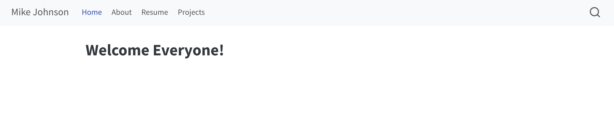

](images/horst-quarto.png)
Lab 1: Personal Portfolio
Quarto, Github, and RStudio IDE
This is a two week lab, and this site will be updated with the needed content at the beginning of each week.
Quarto is a publishing system built on Pandoc that allows users to create dynamic content using R, Python, Julia, and ObservableJS (with plans to add more languages too!).
R users have commonly used RMarkdown for combining prose, code, and outputs into single “knitted” documents and Quarto extends all of RMarkdown’s best features (plus more!) to additional languages. In this lab you will create the skeleton for a personal web site using R, RStudio and Quarto and will host the site on Github.
Goals(s)
To follow along, you’ll need:
Already you should have R and RStudio on your machine. You should also have a Github account and should be comfortable creating a new repository and connecting in to a new R Project in your ~/github folder. Building on these, this lab has a few key learning objectives.
It will ensure you are comfortable with the tools of reproducible science including:
- RStudio (for developing),
- Quarto (for authoring)
- Github (for version control and publishing)
It will provide a central repository for your work throughout the quarter
It will become an artifact you can take with you to showcase your skills to future employers.
By the end of this activity you will have:
Constructed a simple website with basic information
Hosted it your personal Github for the world to see
Been exposed to markdown, YMAL, CSS, HTML and website construction
Practiced Forking and contributing to another repository.
All said, the more time you put into refining, personalizing and developing this site through the quarter, the more it will benefit you in the long run, both in this class and beyond!
Okay, let’s get started.
Jargon
As with any field, web development (or web communication!) has its own lingo and toolsets. Here is a brief summary of the unfamiliar terms you will see in this activity:
URL: URL stands for Uniform Resource Locator and is a reference to a web resource specifying its location on a computer network and a mechanism for retrieving it. Think of it as a web address.
HTML: HTML stands for Hyper Text Markup Language. HTML is the standard markup language for Web pages. Remember that we knit our markdown (qmd) files to HTML.
YML (or YAML): YAML (stands for “YAML Ain’t Markup Language”) is a human-readable data-serialization language. It is commonly used to configure “global” information. In Quarto files, it describes how the file should knit.

The Sass and CSS logos
CSS: CSS stands for Cascading Style Sheets. CSS describes how HTML elements are displayed. Should a header (#) be blue? Green? Orange? CSS saves a lot of work because it can control the layout of multiple web pages at once.
Sass: Sass is a preprocessor scripting language that extends the capabilities of CSS. It provides a range of additional features and functionality that streamline the development process and make stylesheets more maintainable.
Website Hosting
GitHub Pages
GitHub Pages is a static site hosting service that takes HTML, CSS, and JavaScript files straight from a repository and publishes them as a website. GitHub Pages is available for public repositories.
There are three types of GitHub Pages sites: project, user, and organization.
We are not interested in organization sites, and will focus on the details of user and project sites.
In this lab, we will be building your user site, and in future labs, you might build a project site.
user sites are connected to a GitHub account (not a project/repository). To publish a user site, you must create a repository named
<user>.github.io. Active user sites are available athttp(s)://<username>.github.io.project sites are connected to a single project (repository). The source files for a project site are stored in the same repository as their project. Active project sites are available at URLs following the pattern:
http(s)://<username>.github.io/<repository>.
Why are Github Pages cool? Well they are free. They are secure. And like the versioned code, all you need to do to modify a site is edit, commit, and push your changes.
index.html
index.html is the most common name for the default page shown on a website. If you publish a website, and a server looks for the web address, the information rendered is likely stored in the index.html file. Therefore it is critical you have a file named index.html if you are going to host your own site.
We will use your websites landing page as an “about me” section to introduce yourself to our class and more broadly to the internet. Take some time to write a concise and clear paragraph introducing yourself, describing what you enjoy, and what you aim to do (within a professional context). Feel free to add hyperlinks to relevant accounts or other web pages using the Rmarkdown syntax.
Week 1:
This week lab will leverage the amazing material put together by Sam Csik from UCSB. In this first week, we will focus on the following three tasks.
- Building the scaffolding of your personal webpage
- Getting it connected to Github and deployed via Github Pages.
- Populating the introduction and CV/resume portion of the website.
Next week, we will focus on:
- Customizing your website to better represent your uniqueness
- Adding content from one of you favorite CSU projects
- Contributing to a class website through a
fork-->PR workflow
To start this week, you will work closely with your TA’s and the content put together below:
Specifics for this class:
By the beginning of next weeks lab, you should have your site deployed to Github and have a tab for the following three sections:
[What adjectives describe your personal brand (i.e. you, your skills / expertise, your motivations, your achievements? Choose 3-5.]
[What key messages do you want to maintain as a consistent theme across your website / professional portfolio?]
[What audience(s) do you want your website to serve / reach?]
I cannot emphasize enough that anytime I read an application, if there is a website I’ll go to it, and if there is a short bio, I read it. It is a very good way to make a strong technical and personal first impression.
---
title: "Projects"
---
In the Spring of 2025 I took a class Quantative Reasoning class based in R. I wrote some code, and did some cool data science. Here is a collection of links!
## [Building a project website]()
- In this assignment we built a static users site with Github Pages
- Includes a github repo for access to all the code.
- Look at how high quality my work is!Your job is to make this text meaningful to you, and to add the appropriate URL to the header. You must also describe what you learned in this activity in 3-5 bullet points. Do this in a way that is directed at showing an audience what you know, not as an exercise to satisfy me.
🎉 Congrats 🎉 you have created a personal website and hosted it online.
Week 2:
Given last weeks lab, you should now have a basic version of your website up and running. At minimum it should look something like this, and be accessible from the Github pages URL associated with your repo:

Today, we’ll learn how to customize the appearance of our site using Sass & CSS.
The base material for this week can be found here
Note
Note that we are not starting at the beginning of that presentation but rather slide 7!
Throughout this lab, work with your TA and classmates to enhance your website in the following ways:
-
- Choose from one of the 5 listed here
-
- At minimum, Github needs to be linked and perhaps linkedin and/or email
-
- This site can be helpful!
Note
Note that we are not going to the end of the presentation but rather stopping on slide 34! There’s is a ton of great information in the remaining slides if you are interested in Web Development or Web based graphic design. For the purposes (and current )
Submission:
I have created a repository here for our class. Notice, it is similar to the site you just built!
To submit your assignment, you must do the following:
- Fork the above repo
- Clone a local copy as an RProject in your
~/githubdirectory - Create a new csv file in the people directory with the naming convention
{first}_{last}.csv- Remember that csv stands for comma separated values!
- In line 1 of your new file copy the following:
first,last,website,major,interest,hometown_lat,hometown_lng
- In Line 2, populate those sections with your own information. A sample file can be found under my name.
- Ensure that you can read you file with
readr::read_csv() - Commit your changes to your local copy.
- Push the changes to your online repo.
- Submit a pull request to have your modifications merged with my master branch doing the following:
- On GitHub, navigate to the main page of your version of the
people-of-ess-330repository. - Above the list of files, click Pull request.

- Use the base branch drop down menu to select the branch you’d like to merge your changes into (my main), then use the compare branch drop-down menu to choose the topic branch you made your changes in (your main).

- Type a title and description for your pull request. This should be something like ** LASTNAME: Lab 1 Submission**

- Create a pull request that is ready for review, by clicking “Create Pull Request”.

When you do this, I will merge your changes into the main site. In addition, submit your webpage URL to the appropriate Canvas dropbox.
Rubric
-
-
-
-
- Applied template
- Social links are present
-
-
Extra Credit: Create a unique favicon (10)
Total: 100 points
Conclusion
So what did we learn in this process, and why does it matter for environmental science? Well, data science as a whole is moving toward a more open, collaborative future—one where sharing, contributing, and understanding others’ work is not just encouraged but expected. Your ability to document, communicate, and maintain reproducible workflows using Quarto and GitHub is a crucial step toward that future.
Beyond that, version control isn’t just about managing code—it’s about managing ideas, tracking progress, and working effectively with others. The skills you’ve built here extend far beyond personal websites. Whether you’re analyzing climate trends, modeling hydrologic systems, or working with geospatial data, these same tools will help you keep your work transparent, reproducible, and impactful.
I also hope you gained some confidence. Most of you had never touched the tools we used or heard of things like YML, HTML, or CSS before this project. A huge part of becoming a data scientist is exposure to what exists in the wild. The fact that you installed, tested, and used all of these technologies to create something tangible is no small feat. That process—diving into the unknown, figuring things out, and making it work is what data science is all about.
And let’s talk about your professional future. You now have something tangible to show beyond a bullet point on a resume. In a world where job applications are increasingly automated and competitive, a well-crafted online presence—one that demonstrates technical skills and intellectual curiosity—can set you apart.
So take pride in this! If this felt like a lot, that’s because it was—and yet, you did it. This is the foundation for meaningful work in data science and environmental research. Keep building on it.